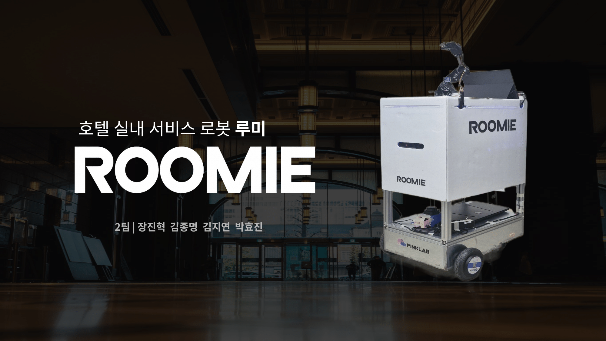
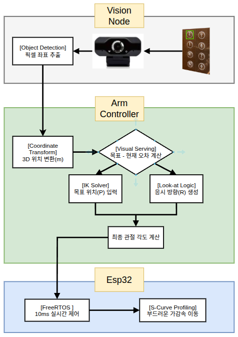
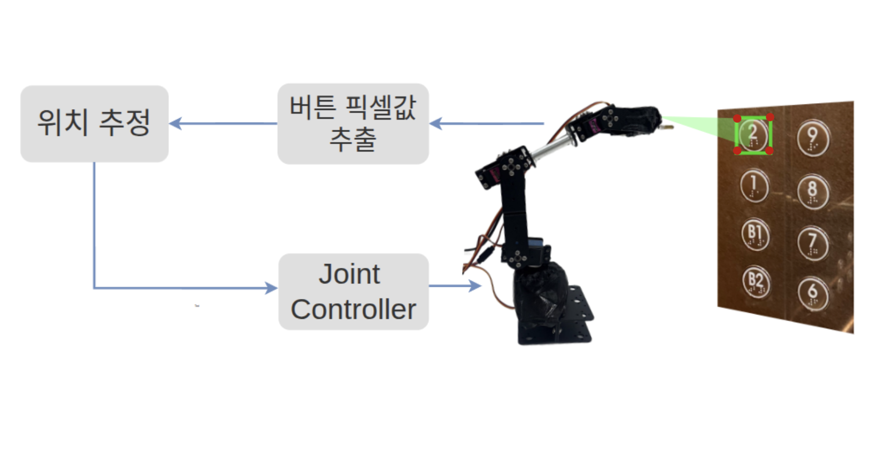
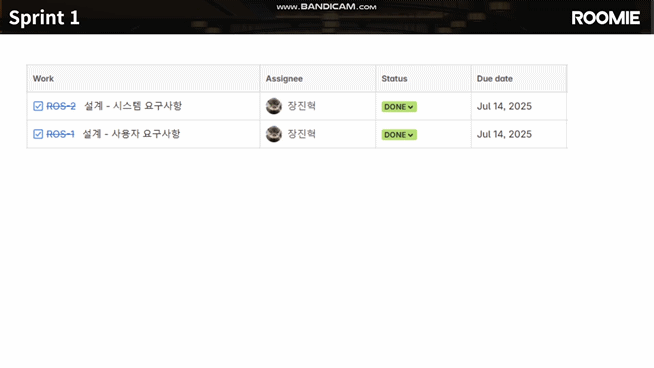
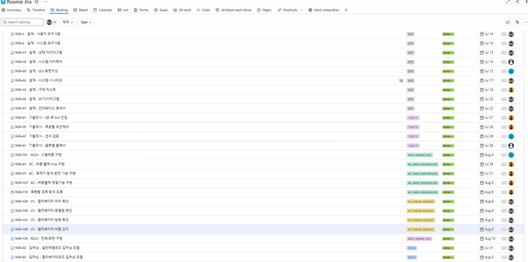
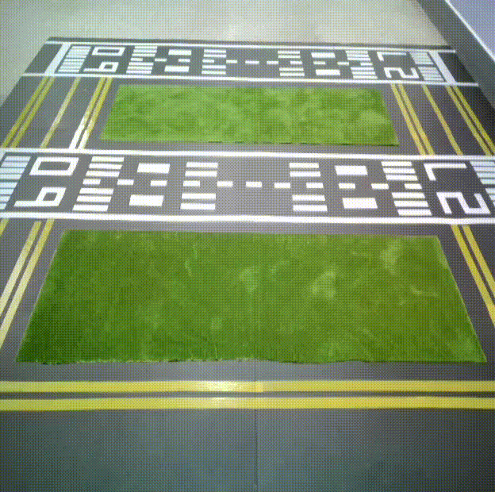
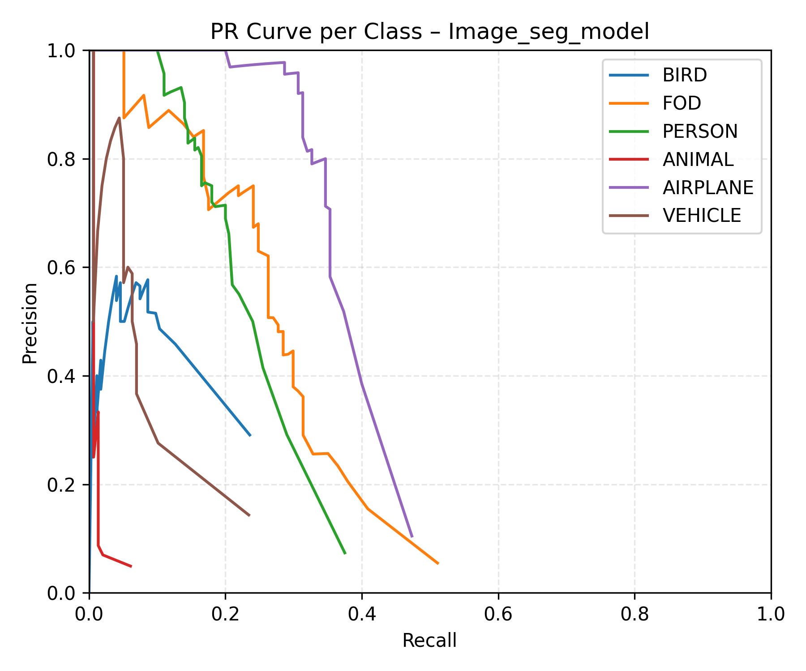

About Me

김 종 명
Robot Software Engineer
Education
인하공업전문대학 | 항공기계공학과
애드인에듀 | AI 자율주행 로봇 개발자 과정 9기 수료
Tech Stacks
01. JAVIS (도서관/카페 서비스 로봇)

도서관, 카페 등 복합적이고 좁은 실내 환경에서 단순 주행을 넘어 안내, 서가 정리 등 구체적인 임무를 수행할 수 있는 통합 로봇 시스템 구축을 목표로 개발


State Machine 기반으로 로봇를 제어하고 예외 상황(배터리, 충돌)을 고려해 설계하여 안정성을 확보하고 Main Controller 전용 GUI 툴을 개발해 로봇 내부 상태를 시각화 및 검증


AI, 주행, 암 제어 등 하위 시스템과의 통신 규약을 추상화하여 타 파트의 진척도와 무관하게 개발할 수 있도록 인터페이스를 정의하고 Mock 객체를 구현하여 테스트시 병목현상을 예방


Navigation Stack 분석을 기반으로 Costmap 파라미터 튜닝 및 다양한 컨트롤러 비교 검증을 수행하여 좁은 통로와 복잡한 서가 공간에서의 주행 성능을 최적화
01. JAVIS - Trouble Shooting

• cost map에서 inflation layer을 높이면 좁은 길 진입 실패 및 Recovery Loop 발생, 낮추면 벽면 충돌 위험 증가
• 직사각형 차동 로봇이 장애물이나 협소한 공간에 있을때 빠져 나오지 못하거나 그로인해 회복동작(Rotate/costmap reset)중 장애물과 빈번한 충돌 발생
• NavFn Planner가 로봇의 실제 크기를 무시한 '점 모델' 경로를 생성하여 복잡하거나, 좁은공간 내에서 직사각형 로봇이 경로를 추종하기 힘듬
• LiDAR 필터링 범위가 실제 로봇 모델보다 넓게 설정되어, 코앞의 장애물을 노이즈로 판단해 무시해 rotate나 costmap 초기화 시 근접 장애물과 충돌 되는 현상을 확인
• DWB Controller의 단순 속도 샘플링 방식이 복잡한 공간에서 유효한 회피 궤적을 찾지 못하고 주행이 정체되는 한계가 있음
로봇 형상(직사각형)과 회전 반경/후진가능 여부을 반영해 경로를 생성하여 좀더 복잡한공간에서 안정적으로 주행 가능하도록 개선
LiDAR 필터 범위 재설계 및 코스트맵 가중치 튜닝으로 중앙 주행 유도하면서 좁은 공간도 안정적으로 주행 가능하도록 최적화
샘플링 기반 모델 예측 제어를 통해 장애물 밀집 구간에서의 부드러운 속도 조절 및 주행 유연성이 향상됨
02. ROOMIE (호텔 실내 서비스 로봇)


호텔 객실 배송 서비스와 기존 엘리베이터 연동 API 방식을 사용하지 않고 로봇이 인식/판단하여 물리적으로 버튼을 조작 후 층간 이동하는 시스템을 목표로 개발

4-DOF 기구적 제약 기반 URDF 모델링 설계, 비주얼 서보잉 시 타겟 시야 확보를 위해 방향 제어 로직을 통합한 IK 연산 구현

YOLO 기반 2D 픽셀의 3D 공간 좌표 변환 처리, 실시간 오차 보정을 위한 비주얼 서보잉 루프 설계, 하드웨어 유격을 알고리즘으로 보완하는 제어 환경 구축


Jira를 도입하여 각 파트의 개발 진척도를 시각화하고 스프린트 단위로 이슈를 관리
03. FALCON (항공 운항 AI 안전 서비스)


활주로 내 이물질(FOD)과 무단 침입자를 CCTV로 실시간 감지하고 관제사가 즉각 대응할 수 있도록 위험물의 정확한 구역 위치(GPS/Map 좌표)를 제공하는 관제 시스템을 구축


YOLO v8 커스텀 학습(90%↑) 및 ByteTrack 알고리즘을 적용하여 객체 ID 유지 및 이동 경로 추적 구현


Homography(원근 변환) 기법으로 CCTV의 2D 픽셀 좌표를 실제 지도의 거리 단위(Meter)로 변환하여 구역별 위치 정보 제공

HSV 색상 분할 기법을 적용하여 형광 조끼 착용 여부를 판단, 인가된 작업자와 침입자를 구분
03. FALCON - Trouble Shooting

• CCTV의 2D 픽셀 좌표만으로는 객체의 실제 위치나 어디구역인지 파악 불가
• 오픈 데이터셋으로 학습시 테스트하는 환경에서 정확도가 떨어짐

• 카메라 설치 각도에 따른 원근 왜곡으로 인해 이미지 하단과 상단의 실제 거리가 다르게 계산됨
• 활주로 같은 특수한 환경이나 테스트 환경에 맞게 데이터를 생성해야 해당 환경에 맞는 정확도를 달성할 수 있음, 부족한 데이터셋을 Blender와 Unity를 통해 다양한 환경의 데이터를 시간 내에 많은 양을 생성하여 실제 데이터셋이랑 융합해서 학습


4개 지점의 ArUco 마커를 기준으로 투영 행렬을 계산하여 픽셀 좌표를 실제 미터(m) 단위로 변환 (오차 ±0.5m 이내)
테스트 시 다수 객체 환경에서도 90% 이상의 검출률 달성